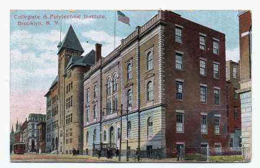

Some Stuff About Poly
I've collected some stuff about Poly from various sources.
I include it here for whatever interest it may have.
Some Old Photos and Ads
These photos of Poly are of the Livingston Street building--before Poly moved to 333
Jay Street.
The original building of the Polytechnic Institute of Brooklyn, known until
1889 as the Brooklyn Collegiate and Polytechnic Institute, was erected in 1854
at 99 Livingstone Street. Its first classes contained 250 male students in the
collegiate and preparatory departments. In 1958, the Institute moved to more
modern quarters on Jay Street.
 |
An ad from an unnamed 1895 journal or magazine |
 |
Same ad, one year later |
|  |
A 1911 image of Poly from a postcard |
 |
A stylized picture of Poly from the 1931 Polywog. |
 |
A newspaper photo of a fire on the upper floors of Poly in 1948. |
 |
The Poly building at 85 Livingston Street taken from the 1953 Polywog. |
 |
The Poly A, L, and C buildings taken from the 1953 Polywog.I guess that the is the 99 Livingston Street main complex |
 |
The Poly Mechanical Engineering building taken from the 1953 Polywog.
I don't know what the address was. |
 |
The Poly South Building taken from the 1953 Polywog.
Again, I do not know what the address was. |